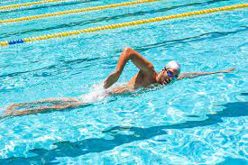
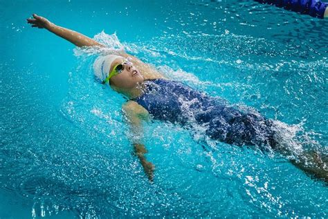
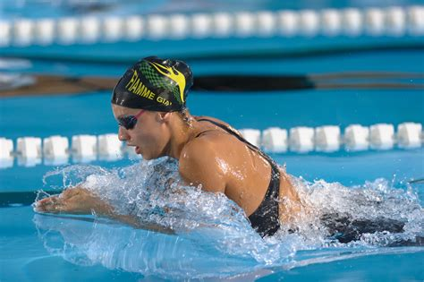
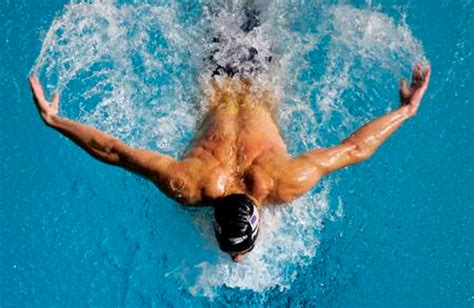

La Natación y el salvamento en la piscina
La natación es el movimiento y el desplazamiento a través del agua mediante el uso de las extremidades corporales y por lo general sin utilizar ningún instrumento o apoyo para avanzar.
Es una de las principales actividades recreativas públicas y en algunos países las lecciones de natación son una parte obligatoria del currículo educativo. También la natación tiene competencias locales, nacionales e internacionales.
Ciencia
La natación se basa en la flotabilidad natural del cuerpo humano, el cuerpo tiene una densidad relativa de 0,98 en comparación con el agua. La hidrodinámica es una importante técnica para nadar más rápido, es utilizada para reducir la fricción del movimiento del cuerpo a través del agua.
Los Cuatro estilos de natación
- Crol: es el estilo más popular en las escuelas de aprendizaje porque es el primero en enseñarse. Tiene de origen la palabra "crawl" del inglés, que significa reptar o arrastrarse. En ese estilo el nadador se encuentra en posición ventral o boca abajo, y consiste en una acción completa de ambos brazos de forma alternativa, primero el derecho y luego el izquierdo, en un movimiento similar al de las aspas de un molino. De momento se trata del estilo más rápido, seguido por la mariposa, la espalda y por último la braza. Sin embargo, los últimos avances en cuanto a técnica se refiere, indican que los tiempos registrados en la mariposa se van acercando cada vez más a la velocidad de crol.

- Espalda: también conocido como crol de espalda. En este estilo el nadador está en posición dorsal, y consiste en una acción completa y alternativa de ambos brazos y un número variable de batidos de piernas. A principios del año 1912, este estilo se nadaba sobre el dorso del cuerpo con brazada doble, con movimientos de los brazos simultáneos y con patada de bicicleta. Con el tiempo el estilo ha ido evolucionando hasta nuestros días gracias a modificaciones en la técnica. Alguna parte del nadador deberá romper la superficie del agua durante el desarollo de la prueba, aunque está permitido avanzar no más de 15 metros totalmente sumergido después de la salida y en los volteos.

- Braza: es el más antiguo de todos ya que sus movimientos y postura son más naturales. A pesar de que su técnica ha evolucionado más rápido que el resto de estilos, se trata del más lento de los cuatro. En este estilo el nadador se encuentra en posición ventral y realiza movimientos de brazos y piernas simultáneos y simétricos. Otra de las características de la braza que le diferencia del resto de estilos es que en la propulsión, la brazada y la patada comparten una importancia del 50%, aportan el mismo grado de propulsión. Las manos deberán impulsarse juntas, hacia delante, frente al pecho, hacia abajo o sobre el agua.

- Mariposa: es el estilo más moderno de todos, su aparición data de la década de los 50 y nace como una variante de la braza. Es uno de los más difíciles de aprender ya que exige altos niveles de fuerza y coordinación. En este estilo el nadador se encuentra en posición ventral. Tanto los movimientos de las piernas como de brazos son muy similares a los realizados en el estilo crol pero de forma simultánea y con ligeras variaciones. Requiere una perfecta coordinación entre las extremidades superiores y las inferiores, éstas últimas realiza un movimiento similar al aleteo de los delfines, de ahí que también se le conozca como "estilo delfín". Es un movimiento continuo ondulatorio del todo el cuerpo, en forma de "S" tumbada, que también deberá estar perfectamente coordinado con piernas y brazos para una mejor propulsión en el agua y permitir realizar la inspiración.

Y hasta aquí llegamos del aprendizaje de la natación espero que os gustase y sobre todo, profe, espero que te gustase :). Aquí dejo un enlace a la página de donde saqué la información para este trabajo
Enlace a la continuación de la teoría, el Salvamento Acuático